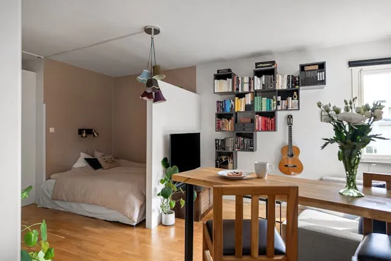
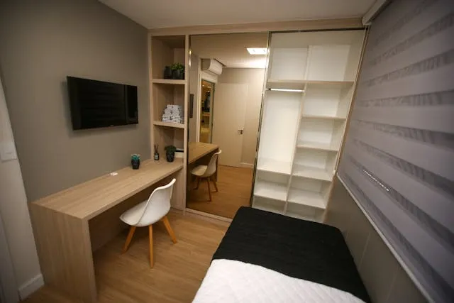

Vivir en un espacio pequeño no significa sacrificar el estilo o la funcionalidad. Con las estrategias de diseño adecuadas, es posible transformar incluso los rincones más compactos en ambientes amplios, cómodos y estéticamente agradables. La clave está en la planificación inteligente y la elección de elementos que maximicen cada centímetro.
Mobiliario Multifuncional y a Medida
Una de las soluciones más efectivas para espacios pequeños es invertir en muebles que cumplan varias funciones o que se adapten perfectamente a las dimensiones disponibles. Piensa en sofás cama, mesas extensibles, otomanas con almacenamiento, o camas con cajones integrados. El mobiliario a medida es una excelente opción para aprovechar cada nicho y esquina.
Colores Claros y Estrategias de Iluminación
Los colores claros en paredes y techos, como blancos, grises suaves o tonos pastel, reflejan la luz y crean una sensación de amplitud. Combínalos con una buena iluminación, tanto natural como artificial. Utiliza espejos estratégicamente para duplicar la luz y la percepción del espacio. Las luces empotradas o de riel son ideales para evitar el desorden visual.
Almacenamiento Vertical y Organizado
Cuando el espacio horizontal es limitado, mira hacia arriba. Las estanterías altas, armarios que llegan hasta el techo y soluciones de almacenamiento vertical son tus mejores aliados. Mantener el orden es crucial; utiliza organizadores internos, cajas decorativas y cestas para evitar el desorden y optimizar el espacio de guardado.
Decoración Minimalista y Personalizada
En espacios pequeños, menos es más. Evita la sobrecarga de objetos decorativos. Opta por piezas clave que tengan significado y que aporten personalidad sin abrumar. Las líneas limpias y los diseños sencillos contribuyen a una sensación de orden y amplitud. Considera obras de arte grandes que actúen como puntos focales sin añadir volumen.
Conclusión
Diseñar un espacio pequeño es un arte que combina creatividad, funcionalidad y una comprensión profunda de cómo cada elemento interactúa con el entorno. Al aplicar estas soluciones, puedes transformar cualquier espacio compacto en un hogar o negocio que se sienta abierto, organizado y lleno de estilo.